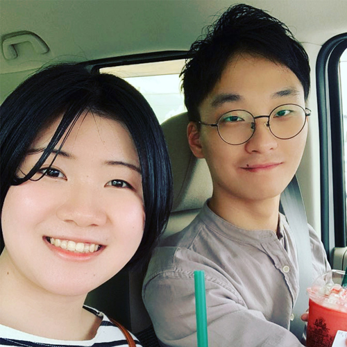

◀ 12:00
あいさつ

今回のインタビューのテーマは、海外生活で得た喜びや直面した困難、そして、メリットやデメリットについてお聞きしたいと思います。
それでは、質問を担当するジョ・ソンシクさんとイ・ジェジュンさんが質問させていただきますのでよろしくお願いします。

はい、よろしくお願いします。
日本に来るまでの経緯

はじめまして、ジョ・ソンシクと申します。
一つ目のテーマは日本就職までの経緯なんですけれども、日本就職を選んだ理由はなんでしょうか？
自然な流れだと思います。
日本語学部に入った時、就職が目標のサークルではなかったんですが、長野先生とすわ先生が担当していたSND(スピーチ・エン・ディベーティング)というサークルで活動し、さまざまな大会に参加しながら日本語の実力を伸ばしました。
そして、先生たちからもアドバイスをもらいながら、自然と日本での就職を決めることになりました。
では、日本就職を準備しながら大変だったことはありましたか？
進路を決めるのが難しかったですね。大学3~4年生の時に就職活動をしながら、どんな仕事をしようかと漠然と考え、就職フェアに参加してさまざまな企業のパンフレットを見ました。
そこで、自分がやりたい仕事、自分ができる仕事は何かを探しながら、私は安定した仕事をしたいと思いました。
また、お客様をおもてなししながらやりがいを感じられる、ボランティア活動のように小さなところで満足できる職種が良いと思い、ホテル業界で働くことを決めました。
海外生活における喜怒哀楽
私もスヒョン先輩と同じように進路を決めるのが一番難しいと思いました。
小さい頃から何かをやっていてそれを自分の進路にする人以外はみんなまだ決めていない人の方は多いですので。
そうですね。わかります。
はい、ありがとうございます。
では次からはスヒョン先輩の喜怒哀楽について質問したいとおもいます。
では次からはスヒョン先輩の喜怒哀楽について質問したいとおもいます。
日本生活で一番大変だったところは何でしたか？
私の場合は少し特殊なケースで、初めて日本に来た時、青森という日本の中でも中々田舎と呼ばれる場所のリゾートに入社したので、そのため、何もないので生活するのに不便なことが多かったです。
バスとかも1日に1~2回しか運行しないし、片道だけでも数千円も交通費がかかるので、最終的に運転免許を取得しましたが、お金がかなりかかって生活面ではこのような試行錯誤が多かったです。
ホームシックの経験はありましたか？
私は割とよく適応できたので、帰国したいとはあまり思いませんでしたが、2年目からは韓国に帰りたいと思うこともありました。
会社の特性上、人と約束をするのが難しかったんです。それに加えて、寮の周りには何もなかったので、一人で生活するには退屈を紛らわすものが必要でした。
それ以上に何かが必要だと感じることもありました。
私も日本で生活しながら、ホームシックなどなれないか心配しましたが、やはり、それを上回る何か趣味とかを作るといいですね。
では逆に一番嬉しいかった瞬間はいつでしたか？
海外に来て、自分のものを少しずつ揃えていくのが嬉しいですね。
免許を取得して車を買ったり、結婚して寮生活ではなく家を買え、車で通勤し、家に帰ると家族が待っている。
職場では年次を重ね、他の人に仕事のノウハウを教える先輩になる。そういったやりがいが楽しく、また、見知らぬ土地での生活の支えになっていると思います。
日本での就職が決まった時、ご両親に対する心配はありましたか？
もちろんです、今でも本当に悩んでいる部分です。韓国を離れて7年以上生活していますが、相変わらず両親は私が韓国に戻って住んでほしいと望んでいます。
両親としては、もっと顔を見ていたいと思っていたでしょうし、ずっと離れていたうえ、数年前にはコロナの影響で韓国に帰るのが難しくなり、その後も東京に転勤して忙しくなったため、なかなか会いに行けませんでした。
だいぶ生活が落ち着いてきたものの、その点では両親との意見を合わせるのが本当に難しいですね。
キム・スヒョン先輩の将来の展望

まず、来年からは分野は異なりますが、私たちもエンジニアとして日本で就職することになり、異なる分野ながらもいろいろと役に立ちました。
先輩が理想的な海外生活を送っているようで、顔にも幸せがにじみ出ているように見えます。
さて、質問させていただきたいのは、先輩が海外生活をしている間に、将来の目標や展望についてお伺いしたいのですが、まず現在、日本で達成したい目標があれば、小さなことでも大きなことでも教えていただけますか？
私は日本で働く際に、昇進よりもプライベートな生活を重視しています。妻と一緒に節約しながら生活しており、現在はアパートの家賃を支払っていますが、貯金をしていつかは家を買うことが目標です。
職場ではフロント業務を担当していますが、経験が積まれればフロント以上の役割や本社で勤務をしたいと思っています。
現在、職務に対する満足度ややりがいを感じる部分は何ですか？
今の仕事は転職してから1年が経ち、ようやく落ち着いてきたところです。
勤務時間は25時間ですが、最初の6時間までは問題ないのですが、それ以降は体力的に厳しくなり、集中力が低下してミスが出てしまいます。
そのため、一日一日ミスなく仕事を終えることを目標にしています。後に出勤した際に、前回の勤務でミスがなかったと引き継ぎを受ける時、達成感を感じます。
また、外国人のお客様に対応する際には、日本語のアクセントや表現の違いを減らすよう努めています。お客様に安心感を持っていただけることが大きなやりがいです。
海外就職のアドバイス
それでは、最後のテーマとして、私たちのように海外での就職を準備している学生や個人に対するアドバイスをお聞きしたいのですが、
まず、海外就職を準備する人にとって最も重要だと思うのはなんでしょうか？
日本に来る前に、日本社会や会話の仕方、考え方などを間接的でもいいので、書籍やインターネットを通じて知っておくことが重要です。
事前に知っておくことと、何も知らずに来ることでは大きな差があります。
日本で生活を始める際には、自分の生活スタイルが日本に合っているかどうかを考えてみると良いでしょう。
私は日本に来る前に、自分の生活スタイルが日本に適しているのか、自分の考え方や行動が日本の人々と合うのかをたくさん考え、シミュレーションを行いました。これが最も重要だと思います。
異なる社会や思考の違いについて事前に知識を得ておくことは、役立つということですね。
それでは、7年間異なる文化で生活してきた中で、これはやってはいけない、あるいは先輩が実際に失敗した経験などがあれば教えていただけますか？
そうですね。日本では適切な距離を保って会話することが一般的ですけど、この距離感を保つことが難しいでした。
また、最初は日本の同僚たちとすぐに親しくなろうと思いましたが、周りのアドバイスを聞いて考えが変わりました。
日本で職場生活をする際には、まず自分の仕事をしっかりとこなすことが重要です。自分の役割をきちんと果たし、同僚に信頼されることが大切です。
信頼を得た後で初めて、同僚たちと親しくなることができます。結局、職場での関係を築くためには、自分の役割をしっかりと果たすことが重要な要素です。
テーマ以外の質問
ニックネーム（ZOOM）にラムネを使った理由がありますか？
はい、祭りなどでよく見かけるラムネが好きで、ニックネームとして使うようになりました。象徴的な感じで使用しています。
韓国料理と日本料理のどちらが美味しいと思いますか？
最初は韓国料理だけを作っていましたが、日本で生活するうちに日本の食材を使って和食もたくさん作るようになりました。
妻と一緒にいろいろな料理を美味しく作って食べています。韓国料理でも日本料理でも、どちらもよく食べています。